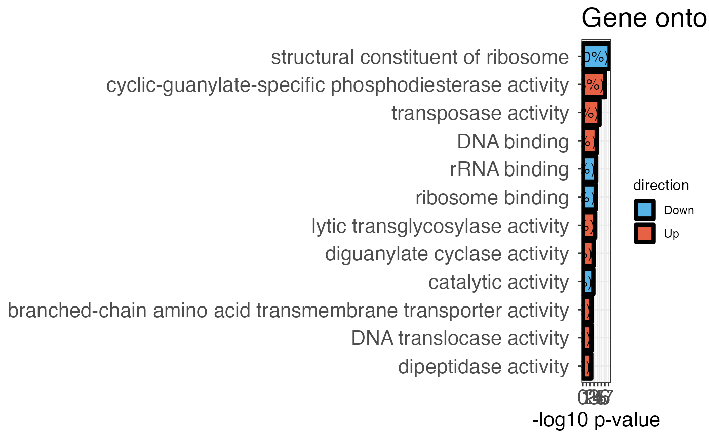

R/calculate_go_enrichment.R
calculate_go_enrichment.RdAnalyses enrichment of gene ontology terms associated with proteins in the fraction of
significant proteins compared to all detected proteins. A two-sided Fisher's exact test is
performed to test significance of enrichment or depletion. GO annotations can be provided to
this function either through UniProt go_annotations_uniprot, through a table obtained
with fetch_go in the go_data argument or GO annotations are fetched automatically
by the function by providing ontology_type and organism_id.
calculate_go_enrichment(
data,
protein_id,
is_significant,
go_annotations_uniprot = NULL,
ontology_type,
organism_id = NULL,
go_data = NULL,
plot = TRUE,
label = TRUE,
plot_cutoff = "adj_pval top10"
)a data frame that contains at least the input variables.
a character column in the data data frame that contains the protein
accession numbers.
a logical column in the data data frame that indicates if the
corresponding protein has a significantly changing peptide. The input data frame may contain
peptide level information with significance information. The function is able to extract
protein level information from this.
recommended, a character column in the data data frame
that contains gene ontology annotations obtained from UniProt using fetch_uniprot.
These annotations are already separated into the desired ontology type so the argument
ontology_type is not required.
optional, character value specifying the type of ontology that should
be used. Possible values are molecular function (MF), biological process (BP), cellular component
(CC). This argument is not required if GO annotations are provided from UniProt in
go_annotations_uniprot. It is required if annotations are provided through go_data or
automatically fetched.
optional, character value specifying an NCBI taxonomy identifier of an
organism (TaxId). Possible inputs include only: "9606" (Human), "559292" (Yeast) and "83333"
(E. coli). Is only necessary if GO data is not provided either by go_annotations_uniprot
or in go_data.
Optional, a data frame that can be obtained with fetch_go. If you provide
data not obtained with fetch_go make sure column names for protein ID (db_id) and GO ID
(go_id) are the same as for data obtained with fetch_go.
a logical argument indicating whether the result should be plotted or returned as a table.
a logical argument indicating whether labels should be added to the plot. Default is TRUE.
a character value indicating if the plot should contain the top 10 most
significant proteins (p-value or adjusted p-value), or if a significance cutoff should be used
to determine the number of GO terms in the plot. This information should be provided with the
type first followed by the threshold separated by a space. Example are
plot_cutoff = "adj_pval top10", plot_cutoff = "pval 0.05" or
plot_cutoff = "adj_pval 0.01". The threshold can be chosen freely.
A bar plot displaying negative log10 adjusted p-values for the top 10 enriched or
depleted gene ontology terms. Alternatively, plot cutoffs can be chosen individually with the
plot_cutoff argument. Bars are colored according to the direction of the enrichment. If
plot = FALSE, a data frame is returned. P-values are adjusted with Benjamini-Hochberg.
# \donttest{
# Load libraries
library(dplyr)
#>
#> Attaching package: ‘dplyr’
#> The following objects are masked from ‘package:stats’:
#>
#> filter, lag
#> The following objects are masked from ‘package:base’:
#>
#> intersect, setdiff, setequal, union
library(stringr)
# Create example data
# Contains artificial de-enrichment for ribosomes.
data <- fetch_uniprot_proteome(
organism_id = 83333,
columns = c(
"id",
"go(molecular function)"
)
) %>%
mutate(significant = c(
rep(TRUE, 1000),
rep(FALSE, n() - 1000)
)) %>%
mutate(significant = ifelse(
str_detect(
go_molecular_function,
pattern = "ribosome"
),
FALSE,
significant
))
# Plot gene ontology enrichment
calculate_go_enrichment(
data,
protein_id = id,
go_annotations_uniprot = go_molecular_function,
is_significant = significant,
plot = TRUE,
plot_cutoff = "pval 0.01"
)

# Calculate gene ontology enrichment
go_enrichment <- calculate_go_enrichment(
data,
protein_id = id,
go_annotations_uniprot = go_molecular_function,
is_significant = significant,
plot = FALSE,
)
head(go_enrichment, n = 10)
#> # A tibble: 10 × 10
#> term go_id pval adj_pval n_detected_prot… n_detected_prot…
#> <chr> <chr> <dbl> <dbl> <int> <int>
#> 1 "diguanylate cyclas… [GO:… 6.34e-9 1.32e-5 3261 13
#> 2 "structural constit… [GO:… 5.72e-7 5.94e-4 3261 58
#> 3 "rRNA binding " [GO:… 2.09e-4 1.45e-1 3261 44
#> 4 "N-acetylmuramoyl-L… [GO:… 6.89e-4 3.57e-1 3261 5
#> 5 "carboxypeptidase a… [GO:… 8.59e-4 3.57e-1 3261 9
#> 6 "ribosome binding " [GO:… 1.05e-3 3.63e-1 3261 28
#> 7 "cytochrome bo3 ubi… [GO:… 3.33e-3 7.74e-1 3261 6
#> 8 "transmembrane sign… [GO:… 3.33e-3 7.74e-1 3261 6
#> 9 "kinase activity " [GO:… 3.36e-3 7.74e-1 3261 56
#> 10 "tRNA binding " [GO:… 4.51e-3 8.66e-1 3261 47
#> # … with 4 more variables: n_significant_proteins <int>,
#> # n_significant_proteins_in_process <int>, n_proteins_expected <dbl>,
#> # direction <chr>
# }